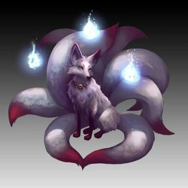
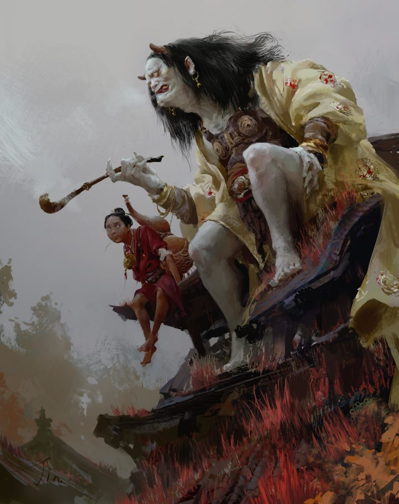
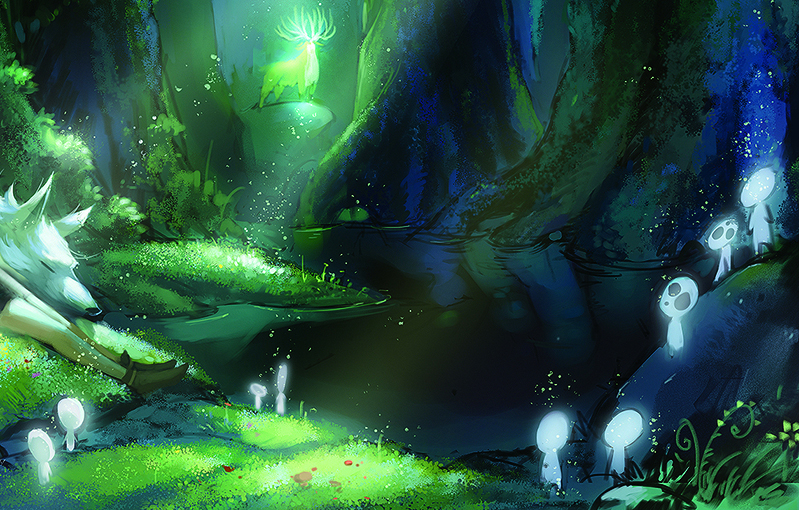
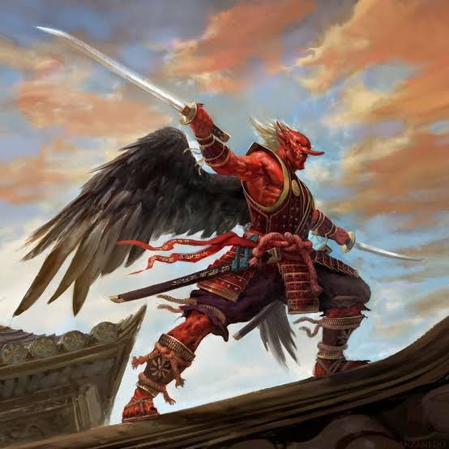

O folclore japonês
Folclore japonês foi muito influenciado pelo Xintoísmo e pelo Budismo, (que são as duas religiões primárias no Japão). Geralmente envolve personagens e situações engraçadas ou bizarras, além de incluir uma variedade de divindades, como kami (deuses e espíritos reverenciados), yōkai (espíritos sem conotação religiosa), yūrei (fantasmas), Dragões, e animas com poderes sobrenaturais. Os principais personagens presentes atualmente na cultura niônica são os Yokai. Abaixo estão listados os mais famosos tipos de seres dessa espécie.
Os Yokai
Yokai é uma classe de criaturas sobrenaturais do folclore japonês na qual alguns são humanos com características de animais, ou o contrário cujo termo é ambíguo, e pode ser usado para designar todo tipo de monstro e criatura sobrenatural. Um youkai geralmente tem algum tipo de poder sobrenatural ou espiritual, assim, encontros com humanos tendem a ser perigosos. Após uma emblematica trama entre a morte de Izanami (deusa mãe) e a ida de Izanagi (deus pai) ao Yomi(mundo dos mortos) para tentar salvar sua esposa, Izanagi se sentiu impuro e foi se purificar no mar. A sujeira que saiu no banho se transformou em outros deuses malignos e foi nesse banho que os Youkai tiveram origem, sendo então monstros que passaram a dominar a terra, na qual Izangi teve de criar seres "do bem" para equilibrar a criação. Há uma grande variedade de youkai na mitologia japonesa. Alguns dos mais conhecidos incluem: • Kitsune: São seres inteligentes e com capacidades mágicas que aumentam com a sua idade e sabedoria. Entre estes poderes mágicos, tem a habilidade de assumir a forma humana — normalmente aparecem na forma de uma mulher bonita. Além disso, elas possuem os poderes de possessão, conseguem gerar fogo das suas caudas e da sua boca, o poder de aparecer nos sonhos e o de criar ilusões. Diz-se que a cada cem anos uma nova cauda nasce e, a cada cauda adquirida, seus conhecimentos e poderes aumentam, sendo o máximo de caudas que uma Kyuubi no Kitsune pode alcançar são nove, mas esse número ocorre apenas quando atinge os 1.000 anos de idade, atingindo o ápice do poder deste yokai.
• Oni: São considerados demônios das montanhas no folclore japonês, semelhantes aos ogros e trolls na cultura ocidental. Um oni é humanoide; eles geralmente são grandes e têm rostos de homens, macacos, bestas e até de pássaros. Frequentemente possuem chifres, que variam desde pequenas protuberâncias a chifres longos, pontudos e espiralados que formam arcos como em um antílope, ou lisos como os chifres de um dragão.
• Kodama: São considerados yokai míticos que vagueiam através dos tempos visitando florestas ancestrais, onde, segundo as lendas, a maioria dos Kodama são pacíficos. As pequenas e serenas criaturas partilham sua sabedoria com aqueles com os quais são capazes de se comunicar. Nos velhos tempos, Kodama foi dito ser um Kami. Ainda hoje no Japão, as pessoas preparam pequenos santuários na base de vertas árvores, adoram e rezam para essas lendárias criaturinhas.
• Tengu:são criaturas fantásticas do folclore japonês, uma espécie de duende cujas lendas possuem traços tanto da religião budista quanto xintoísta. Habitam florestas e montanhas cujo o traço físico mais marcante dos tengus é o nariz comprido além da maioria deles também terem barba. A altivez era a característica mais retratada dos Tengu nos antigos registros, essas soberbas criaturas gostavam de pregar peças em humanos e de tentar Samurais e Monges budistas pretensiosos e arrogantes. Com isso, são considerados kami (divindades) das Montanhas e Florestas.
